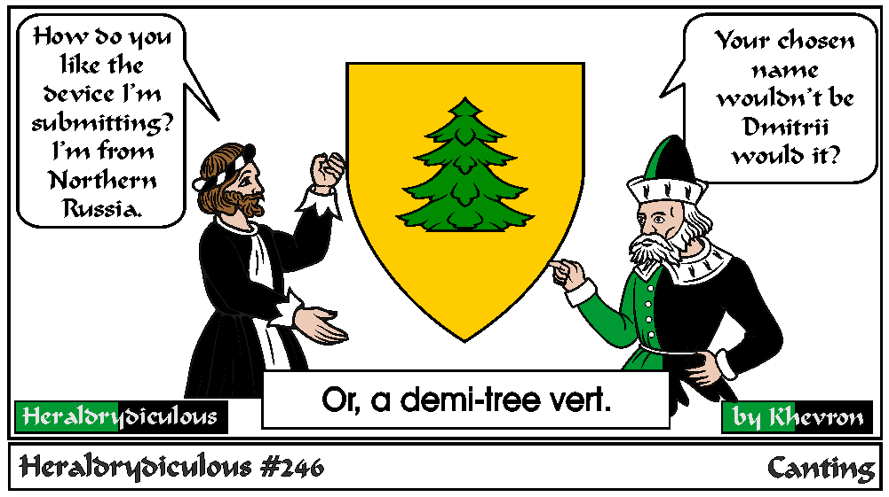

This might be more likely a tree couped, but maybe it's just wrong.
Canting arms are heraldic bearings that represent the bearer's name in a visual pun or rebus.
Examples at Wiki on Canting Arms.
Some are obscure, but others are quite obvious.
If anyone has examples of SCA canting arms, I'd like to link or post them here with these:
Gwenlliana Clutterbooke
Gules semy of open books Or.
Ursula Georges
Gules, a bear passant sable.
Wilhelm Zweikopfig Falke
Argent, a double-headed hawk displayed and a chief purpure.
Elizabeth of the Blue Rose
Argent, in saltire two roses, slipped and leaved, azure and a chief purpure.
e-mail: